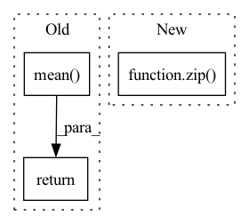

Pattern ID :239

Before Change
distance = torch.stack(distance_list, 0)
if self.average:
distance = distance.mean(0)
else:
distance = distance.sum(0)
return distance
After Change
stfts_y = self.multiscale_stft(y)
distance = 0.
for x, y in zip(stfts_x, stfts_y):
distance = distance + lin_distance(x, y) + log_distance(x, y)
In pattern: SUPERPATTERN
Frequency: 4
Non-data size: 3
Instances
Fragment ID: 860549
Project Name: acids-ircam/rave
Commit Name: c57a98c5145db1f44c6e5c540989494f696502ca
Time: 2022-11-05
Author: caillon@ircam.fr
File Name: rave/core.py
M Class Name: AudioDistance
N Class Name: AudioDistanceV1
M Method Name: forward(3)
N Method Name: forward(3)
M Parent Class: nn.Module
N Parent Class: nn.Module
M File Name: rave/core.py
N File Name: rave/core.py
M Start Line: 284
M End Line: 296
N Start Line: 276
N End Line: 284
'>
Before Change
if loss_hard.numel() < n_min:
loss_hard, _ = loss.topk(n_min)
return torch.mean(loss_hard)
class Dice(nn.Module):
def __init__(self, delta: float = 0.5):
After Change
def forward(self, preds, labels: Tensor) -> Tensor:
if isinstance(preds, list):
return sum([w * self._forward(pred, labels) for (pred, w) in zip(preds, self.aux_weights)])
return self._forward(preds, labels)
'>
Fragment ID: 860548
Project Name: sithu31296/semantic-segmentation
Commit Name: b68900992fb24dd5166b2b34e3d35d19493d747d
Time: 2021-08-21
Author: sithu31296@gmail.com
File Name: utils/losses.py
M Class Name: OhemCrossEntropy
N Class Name: OhemCrossEntropy
M Method Name: forward(3)
N Method Name: forward(3)
M Parent Class: nn.Module
N Parent Class: nn.Module
M File Name: utils/losses.py
N File Name: utils/losses.py
M Start Line: 25
M End Line: 37
N Start Line: 46
N End Line: 49
'>
Before Change
// adjust loss to account for number of classes
dice_score = dice_score / targets.shape[1]
return dice_score.mean()
__all__ = ["ce", "ohemce", "dice"]
After Change
def forward(self, preds, targets: Tensor) -> Tensor:
if isinstance(preds, list):
return sum([w * self._forward(pred, targets) for (pred, w) in zip(preds, self.aux_weights)])
return self._forward(preds, targets)
'>
Fragment ID: 860544
Project Name: sithu31296/semantic-segmentation
Commit Name: b68900992fb24dd5166b2b34e3d35d19493d747d
Time: 2021-08-21
Author: sithu31296@gmail.com
File Name: utils/losses.py
M Class Name: Dice
N Class Name: Dice
M Method Name: forward(3)
N Method Name: forward(3)
M Parent Class: nn.Module
N Parent Class: nn.Module
M File Name: utils/losses.py
N File Name: utils/losses.py
M Start Line: 48
M End Line: 62
N Start Line: 77
N End Line: 80